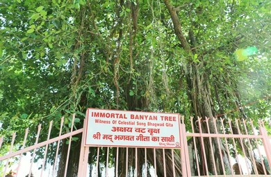

few people around the world are aware of the epic trail of Mahabharata. Across india, there are many locations which tells story about the same yet is unexplored i've got a burning question in my mind to know about those and reveal it to people who find Mahabharata as an interesting topic.
places and their related stories :
1.pandav sthan panr bihar:

This place is associated with the story of how Duryodhana tried to kill the Pandava brothers by setting the Lakshagriha (House of Lacquer) on fire. However, they escaped through a tunnel and stayed here for several days. It served as a temporary shelter to the Pandavas, which is why it is called Pandav Sthan. It is currently located at Panr village, in the Dalsinghsarai block of Samastipur district, Bihar.
2.bhimkund, bajna village, chatarpur

If you love history and nature together, this place is for you.located near Bajna village in Chhatarpur district, Madhya Pradesh, India, Bhimkund,also known as Neelkund, is a beautiful site featuring a cave-like structure and a pond filled with mesmerising blue water. During the Pandava's thirteen-year exile, Draupadi became suddenly thirsty and asked Bhima to fetch water. Bhima struck the ground with his mace, and water emerged asùforming the pool. To this day, its depth remains unknown; although you cannot see the bottom with the naked eye, Bhimkund appears remarkably deep and mysterious.Many people believe that the water of Bhimkund holds medicinal or healing properties.If you're visiting Bhimkund, you can explore beyond it and add Raneh Fallsùalso known as the "Grand Canyon of India"ùabout 20-22km away. About 40km from Bhimkund, you'll find Panna National Park, and nearby is the Pandav Falls and its mythic caves, featuring a 30m-high waterfall, located roughly 35km from Bhimkund. These spots together create a rich blend of natural beauty, wildlife, and mythological heritage.
3.anicent mound, abhimanyupur

Abhimanyu Ka Tila, also known as Abhimanyu's Mound, is a place that tells the brave story of the Mahabharata hero Abhimanyu, who died at the age of 16 on the 13th day of the Kurukshetra war. This site symbolizes the courage of a young warrior who played a crucial role in ensuring the victory of the Pandavas. Abhimanyu was the son of Arjuna and Subhadra, and the nephew of Krishna and Balarama. On the 13th day of the war, when Dronacharya designed the deadly Chakravyuh (Padmavyuh) formation, no one in the Pandava army knew how to break chakravyuhùexcept Abhimanyu. Though he knew how to enter the formation, he did not know how to exit it. According to legend, when Arjuna was explaining the Chakravyuh strategy to Subhadra (while she was pregnant), Abhimanyu, still in the womb, listened to the part about how to enter it. But before Arjuna could explain the way out, Subhadra fell asleepùso Abhimanyu never heard the full strategy Despite this, Abhimanyu bravely entered the Chakravyuh and fought against six of the greatest Kaurava warriors, defeating many of them. However, trapped and alone, he was eventually killed. Today, this historical and mythological place is believed to be located in abhimanyupur village,district of Haryana,India, where the Chakravyuh is said to have been formed.
4.lakshagraha,barnava,uttar pradesh

Lakshagriha (The House of Lac) is a famous and pivotal incident from the Mahabharata. Yudhishthira, the eldest Pandava, had been crowned Prince of Hastinapura. Out of jealousy and fear of losing the throne, Duryodhana, with the cunning advice of his uncle Shakuni, plotted to kill the Pandavas. They ordered the royal architect, Purochana, to construct a grand palace in Varnavrat using highly flammable materials such as lac (wax), dry grass, ghee, and bamboo designed to look luxurious but intended to burn like a torch. The Pandavas and their mother, Kunti, stayed in the palace for about a year, unaware of the deadly trap. However, Vidura, their wise uncle, had secretly warned them in advance and arranged for the construction of a hidden underground tunnel as an escape route. When Purochana and his wife set the palace ablaze one night, Bhima displayed great strength and presence of mindùhe fought off the attackers, ensured his family safety, and led them through the tunnel to freedom. Everyone in Hastinapura, including their enemies, believed the Pandavas had perished in the inferno, which allowed them to live in disguise for some time and avoid immediate threats. This incident marked a turning point in the rivalry between the Pandavas and the Kauravas, intensifying the chain of events that eventually led to the Kurukshetra war. The location of Lakshagriha is widely identified today in Barnawa village, Baghpat district, Uttar Pradesh, India. Archaeological remains, such as ancient bricks and charred materials, have been found in the area, and a site believed to be the tunnel exit is still pointed out by locals. Barnawa has thus become a place of historical and mythological significance, attracting visitors interested in the legends of the Mahabharata.
5.baan ganga,dayalpur,haryana

After battling and creating chaos for nine consecutive days, the Pandavas felt that victory would be impossible as long as Bhishma continued to fight. With the help of Krishna's strategy, they placed Shikhandi in front of Arjuna. When Bhishma refused to fight Shikhandi, Arjuna shot arrows from behind and brought Bhishma down, making him lie on a bed of arrows. Feeling thirsty, Bhishma requested Arjuna for water. As Bhishma was the son of Mata Ganga, Arjuna shot an arrow into the ground, from which the Ganga emerged and quenched Bhishma's thirst. Today, this place has statues of Arjuna with his bow and Bhishma lying on the bed of arrows. While visiting Kurukshetra, you can plan a trip to this spot and learn more from the local legends.
6.jyotisar,kurukshetra
the Shrimad Bhagavad Gita is the most important part for anyone seeking to understand the true meaning of life.In the epic mahabharata, When Arjuna became bewildered and refused to fight due to his attachment to his family, Krishna,ùwho was also Arjuna's charioteer,enlightened him with the divine song of the Bhagavad Gita. Krishna explained to him the realms and duties of life, how to attain moksha,the four aims of human life (purusharthas),karma and dharma,detachment,love for god and so on. Krishna delivered the Shrimad Bhagavad Gita at a place called Jyotisar, which is approximately 5 kilometers from the Kurukshetra battlefield. There, one can still see an immortal banyan tree (Vat Vriksha) that is said to have witnessed the discourse of the Gita. Although the site is not heavily developed, it remains deeply significant for those who seek the deeper meaning of life.a place of profound spiritual illumination where Krishna shared the divine wisdom of the Gita.International Gita Mahotsav, held each December as Gita Jayanti.
7.dwarka,gujrat

Dwarka is an ancient city of Bharata. In the Dwapara Yuga, Krishna built a powerful empire in Dwarka after killing Kamsa. During the Mahabharata war, the soldiers from Krishna's side supported Duryodhana. After the war, when Gandhari saw that all her 100 sons had been killed, she blamed Krishna for the war, believing he could have prevented it. She cursed him that just as her lineage (kula) had been destroyed, Krishna's kula would also perish. After 36 years, when Krishna's time to return to his divine abode approached, destruction began in his kingdom. The Yadavas fought among themselves and killed one another. Eventually, Dwarka Nagari sank into the sea. Krishna and Balarama went to live in a nearby forest, where a hunter named Jara mistakenly shot Krishna, marking the end of both Krishna and his Dwarka. Today, Dwarka lies in the northwestern Indian state of Gujarat. It is home to the Dwarkadhish Temple, dedicated to Lord Krishna, and is one of the four sacred Hindu pilgrimage sites known as the Char Dham. Bet Dwarka is also associated with the story of Krishna's childhood friend Sudama, who visited him and offered half-cooked rice dear to Krishna, which is still given as prasadam today. A trip to Dwarka offers not only religious and historical sites but also the charm of the sea,coast, and seagulls.
8.mana,uttrakhand

When we come across a timeless epic like the Mahabharata, it is equally important to understand the sacred place where this monumental text was first composed. Nestled in the lap of the Himalayas, Mana village in Uttarakhand holds immense spiritual and cultural significance. This picturesque village, located near Badrinath, is home to the ancient Vyasa Cave and Ganesh Cave, where it is believed that Sage Vyasa dictated the great epic while Lord Ganesha, known for his sharp intellect and divine writing skills, served as the scribe. According to tradition, this collaboration between the sage and the deity gave the world the Mahabharata, the longest poem ever written, consisting of over one lakh verses.